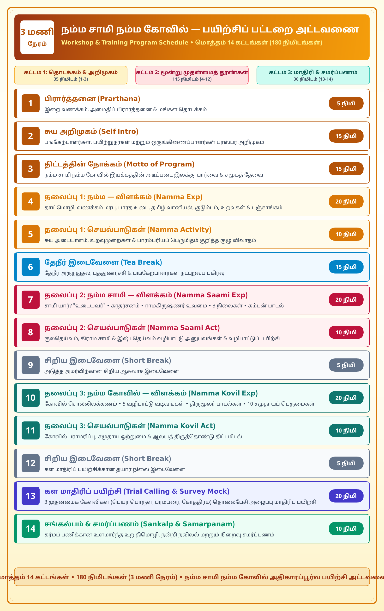

'நம்ம' என்ற உணர்வே மனித சமுதாயத்தை ஒன்றிணைக்கும் மூலவிசை. நமது தொன்மையான பாரதப் பண்பாட்டில் நமது தாய்மொழி, வணக்கம் சொல்லும் முறை, உடை, வாழ்வியல் முறைகள் மற்றும் கொண்டாட்டங்கள் ஒவ்வொன்றிலும் ஆழமான அறிவியலும் ஆன்மீகமும் இழையோடியுள்ளன.
கூடி வாழும் மக்களிடையே கருத்துக்கள் பரிமாறிக் கொள்ளவே மொழி உருவாகிறது. மொழியின் சொந்தக்காரர்களான மக்களின் எண்ணங்களும், சிந்தனைகளும், தத்துவங்களும் தாய்மொழியில் மட்டுமே முழுமையாகப் பிரதிபலிக்க முடியும்.
அந்த மக்கள் அவர்களது தாய்மொழியைப் பயன்படுத்துவதன் மூலமே அவர்களது சிந்தனைகளும் உணர்வுகளும் முழுமையாகவும் சரியாகவும் வெளிப்படுத்தப்படும். ஆகவே தாய்மொழியைப் பயன்படுத்துவது மொழியைப் பாதுகாப்பதோடு மட்டுமின்றி, நமது ஆழமான சிந்தனைகளைத் தெளிவாக்கி சமுதாயத்தை வலிமைப்படுத்துகிறது.
கொரோனா தொற்று பேரிடர் காலத்தில் நோய் தொற்றைத் தவிர்க்க உலக நாடுகள் அனைத்தும் கைகுலுக்குவதைத் தவிர்த்து, நமது பாரம்பரிய 'வணக்கம்' முறையைப் பின்பற்றின.
இரு கைகளையும் கூப்பி வணங்குவது "இருப்பதெல்லாம் இறைவனே", "ஈசா வாஸ்யம் இதம் சர்வம்" என்னும் வேதக் கருத்தை ஏற்று, எதிரில் உள்ள சக மனிதரிடம் உறையும் பரம்பொருளைத் தலைவணங்கி ஏற்கும் உயர்ந்த சமத்துவ நெறியாகும்.
உலகில் முதன்முதலில் நூல் நூற்று, நெய்து, ஆடை உடுத்திய பெருமை நமது பாரத நாகரிகத்திற்கே உரியது. பல்லாயிரக்கணக்கான ஆண்டுகளாக நமது பண்பாடு பின்பற்றி வரும் கம்பீரமான உடை நமது வேட்டியும் சேலையும் ஆகும்.
இன்றும் உலகளவில் சேலை மிக அழகிய, கண்ணியமான, விலைமதிப்பற்ற உடையாகப் போற்றப்படுகிறது. நமது தட்பவெப்ப நிலைக்கும் காலசூழ்நிலைக்கும் மிகவும் பொருத்தமான வேட்டி கலாச்சாரத்தை நாம் கைவிடாமல், வாய்ப்புள்ள போதெல்லாம் பாரம்பரிய உடைகளை அணிந்து பெருமிதத்துடன் வாழ்வோம்.
நமது திருவிழாக்களும் பிறந்தநாள் கொண்டாட்டங்களும் வானவியலோடும் (Astronomy) புவியியலோடும் (Geography) இணைந்து அறிவியல் பூர்வமாகக் கணிக்கப்பட்டவை.
பூமி சூரியனைச் சுற்றி வரும் பாதையில் நாம் பிறந்த அதே புள்ளியில் மீண்டும் பூமி வரும் நாளைக் கணிப்பதே நமது பிறந்தநாள் மரபு. சூரியனின் சுழற்சியை அடிப்படையாகக் கொண்ட 'சூரியமானம்' மற்றும் சந்திரனின் இயக்கத்தை அடிப்படையாகக் கொண்ட 'சந்திரமானம்' இணைந்ததே தமிழ் நாட்காட்டியாகும்.
பாரதக் குடும்ப அமைப்பு என்பது உலகிற்கே வழிகாட்டும் தூண். குடும்பத்தில் அமைதியும் நல்லிணக்கமும் நிலவ முன்னோர்கள் ஆறு வகை நித்திய தர்ம கர்மங்களை வகுத்துள்ளனர்.
பெரியோர்களை மதித்தல், விருந்தோம்பல், உறவு முறைகளைப் பேணுதல் மற்றும் தான தர்மங்கள் வழியே குடும்பப் பிணைப்பும் சமுதாய ஒழுக்கமும் தழைத்தோங்குகிறது.
தாய்மாமன், அத்தை, பெரியப்பா, சித்தப்பா போன்ற தமிழர் உறவுமுறைகள் வெறும் பெயர்கள் அல்ல; அவை மரபணுப் பாதுகாப்பு (Genetic Safeguarding), குடும்பப் பாதுகாப்பு மற்றும் உளவியல் சமநிலையைக் காக்கும் உன்னத கட்டமைப்பாகும்.
திதி, வாரம், நட்சத்திரம், யோகம், கரணம் என்னும் ஐந்து அங்கங்களைக் கொண்ட பஞ்சாங்கம், காலத்தை துல்லியமாகக் கணிக்கும் அதிநவீன பாரத வானியல் அறிவியலின் சான்றாகும்.
வீட்டிற்கு வருபவர்களை "வாங்க" என்று முகமலர்ச்சியோடு வரவேற்பதும், இன்சொல் கூறி உபசரிப்பதும் தமிழரின் தலையாய பண்பாடு. சுயநலமற்ற தியாக உணர்வும், பிறருக்கு உதவும் பரந்த மனப்பான்மையுமே ஒரு சமூகத்தை உன்னத நிலைக்கு உயர்த்தும்.
சாமி என்றால் என்ன? – "உடையவர்" (அனைத்து பிரபஞ்சத்தையும் உயிர்களையும் தனக்கு உடைமையாகக் கொண்டு காப்பவர், தலைவன்).
சாமி மொத்தம் எத்தனை? – சாமி ஒன்றே பல திருநாமங்களாகவும் திருவுருவங்களாகவும் திகழ்கிறார்.
சாமி எங்கே இருக்கிறார்? – "ஈசா வாஸ்யம் இதம் ஸர்வம்" (அனைத்திலும் இறைவன் நீக்கமற நிறைந்திருக்கிறார்), "அங்கிங்கெனாதபடி எங்கும் பிரகாசமாய் ஆனந்த பூர்த்தியாகி விளங்கும் பரம்பொருள்".
2.3 சிந்தனைக்குரிய ஆன்மீகக் கதைகள்
இறைவன் அனைத்திலும் உறைகிறார் என்பதை ஸ்ரீ ராமகிருஷ்ண பரமஹம்சர் மிக எளிய உவமைகளின் மூலம் விளக்கினார். நீர் எப்படி திரவமாகவும் உறைந்த பனிக்கட்டியாகவும் உள்ளதோ, அதுபோல இறைவன் அருவமாகவும் உருவமாகவும் விளங்குகிறார். உலக உயிர்கள் அனைத்திலும் அந்த பரம்பொருளின் இருப்பைக் காண்பதே மெய்யான பக்தி.
"எல்லாம் நாராயணன்" என குரு உபதேசித்தபின், வீதியில் மதம் பிடித்து ஓடிவந்த யானையைக் கண்டு விலகாமல் நின்ற சிஷ்யனை யானை தூக்கி வீசியது.
காயம்பட்ட சிஷ்யனிடம் குரு கூறினார்: "யானையில் நாராயணன் இருப்பது உண்மையே; ஆனால் யானையின் மேல் அமர்ந்து 'விலகிப் போ!' என்று எச்சரித்த பாகனிலும் நாராயணனே பேசினான். அவனது பேச்சை நீ ஏன் கேட்கவில்லை?" — பக்தி என்பது விவேகத்துடனும் பகுத்தறிவுடனும் செயல்படுவதே மெய்ஞ்ஞானம்.
2.4 சாமியின் மூன்று நிலைகள் (Three Tiers of Deities)
குலம் என்றால் என்ன? ஒரே முன்னோர்களை அடிப்படையாகக் கொண்டு, இரத்த உறவு மற்றும் வம்சாவழி பாரம்பரியத்தால் இணைக்கப்பட்டுள்ள மனிதர்களின் ஒரு பெரிய குடும்பக் குழுவைக் குறிக்கும்.
இந்த குலத்தைக் காக்கும் தெய்வமே குலசாமி. "குலம் தரும் செல்வம் தந்திடும் அடியார் படுதுயர் ஆயின எல்லாம் நிலந்தரம் செய்யும்..." — திருமங்கையாழ்வார். குலதெய்வ வழிபாடு விடுபடக் கூடாது; ஆண்டுக்கொரு முறையாவது குடும்பத்துடன் சென்று வணங்குவது வம்சவிருத்தியை அளிக்கும்.
ஊர் மக்களை, அனைத்து சமுதாய மக்களையும் பேதமின்றி ஒன்றிணைக்கும் பெருஞ்சக்தியாக கிராமக் கோவில் விளங்குகிறது.
ஊர் எல்லை காக்கும் அய்யனார், மாரியம்மன், காளியம்மன் போன்ற தெய்வங்கள் ஊர் செழிப்பு, மழை வளம், விவசாய முன்னேற்றம் மற்றும் சமுதாய நல்லிணக்கத்தைக் காக்கின்றன.
தனிமனித அமைதியை உறுதி செய்வது இஷ்டதெய்வம். இந்து தர்மத்தின் உன்னத சிறப்பே, ஒவ்வொரு மனிதனுக்கும் அவனுக்குப் பிடித்த தெய்வத்தை விரும்பித் தேர்ந்தெடுத்து வழிபடும் பூரண ஆன்மீகச் சுதந்திரம் உண்டு.
சிவன், முருகன், பெருமாள், விநாயகர் என உள்ளம் உருகி நினைக்கும் இஷ்டதெய்வம் உற்ற நண்பனைப் போல தனிமனித மன அழுத்தத்தைப் போக்கி நல்வாழ்வு அளிக்கிறது.
நம்ம சாமியை அமர்த்தும் இடமே கோவில். ஆயிரம் ஆண்டுகளாக பாரத தேசம் முழுவதும் கடைப்பிடிக்கப்பட்டு வரும் உன்னத தத்துவமே கோவில் வழிபாடு. கோவில்கள் என்பவை வெறும் வழிபாட்டுத் தலங்கள் மட்டுமல்ல; அவை அறிவியல், வானவியல், சமூக நலம், நீர் மேலாண்மை, கட்டிடக்கலை மற்றும் வாழ்வியல் நெறிகளை ஒன்றிணைக்கும் பண்பாட்டு மையங்களாகும்.
3.1 கோவில் & ஆலயம் சொல்லிலக்கணம்
கோவில் (கோ + இல்)
கோ = தலைவன் (இறைவன்) | இல் = இல்லம் / வீடு (வசிப்பிடம்).
கோவில் என்றால் "இறைவனின் வசிப்பிடம் / அரண்மனை" என்று பொருள்.
ஆலயம் (ஆ + லயம்)
ஆ = ஆன்மா / ஜீவாத்மா (உயிர்) | லயம் = ஒடுங்குதல் (கரைதல்).
ஆலயம் என்றால் "மனித ஆன்மா இறைவனிடம் லயித்து அமைதி பெறும் இடம்" என்று பொருள்.
காலத்தை முன்னோர்கள் 4 யுகங்களாகப் பிரித்துள்ளனர்: கிருத யுகம், திரேதா யுகம், துவாபர யுகம் மற்றும் கலியுகம்.
முதல் மூன்று யுகங்களிலும் இறை வழிபாடு யாகங்கள், தவம், யோகாப்பியாசம் மூலமாகவும், இறைவனுடன் நேரில் வாழ்ந்தும் கடைப்பிடிக்கப்பட்டது. ஆனால் "விக்ரக ஆராதனை" (மூர்த்தி வழிபாடு) என்பது கலியுகத்திற்கே உரிய தனித்துவமான வரம் ஆகும். உருவ வழிபாடு மனித மனதை ஒருமுகப்படுத்தி பக்குவப்படுத்துகிறது.
3.3 ஐந்து வகை வழிபாட்டு வடிவங்கள் (5 Forms of Worship)
இல்லங்களில் இறைவனின் திருவுருவப் படங்களை வைத்து நெய் தீபமிட்டு வழிபடுவது.
ஆகம முறைப்படி வடிக்கப்பட்டு பிரதிஷ்டை செய்யப்பட்ட கருங்கல் மற்றும் பளிங்குத் திருமேனிகள்.
பிரபஞ்ச ஆற்றலை ஈர்க்கும் வடிவியல் தகடுகள் (ஸ்ரீசக்ரம் போன்ற யந்திர வடிவில் மந்திரங்களை வடித்து வழிபடுதல்).
தீபத்தை ஜோதி வடிவாகப் பாவித்தும், ஹோம குண்டத்தில் அக்னி மூலமாகவும் இறைவனை ஆராதித்தல்.
பஞ்சபூத தத்துவத்தைக் குறிக்கும் மண் பொம்மைகள் மற்றும் திருவிழா வீதியுலா உற்சவ பஞ்சலோக மூர்த்திகள்.
ஔவையார்: "கோவிலில்லா ஊரில் குடியிருக்க வேண்டாம்"
"ஆலயம் தொழுவது சாலவும் நன்று"
"கோபுர தரிசனம் கோடி புண்ணியம்"
3.4 திருமூலர் அருளிய திருமந்திரப் பாடல்கள்
3.5 மன்னர்களின் திருப்பணிகளும் நாயன்மார்களின் தவமும்
சேரன் நெடுஞ்சேரலாதன் / செங்குட்டுவன் கண்ணகிக்குக் கோவில் அமைக்க இமயத்திலிருந்து கல் கொண்டு வந்த வரலாறு நம் பெருமையை விளக்குகிறது. மன்னர்கள் நிலங்கள், நகைகள், ஆபரணங்கள், வாகனங்கள் மற்றும் தேர்களை அமைத்து திருக்கோவில்களைப் பொக்கிஷங்களாகப் பாதுகாத்தனர்.
• குங்கிலியக்கலய நாயனார்: கழுத்தில் கயிறு கட்டி சிவலிங்கத்தை நிமிர்த்திய பக்தி.
• பூசலார் நாயனார்: மனதிற்குள்ளேயே கோவில் கட்டி இறைவனை எழுந்தருளச் செய்த மகிமை.
• தஞ்சைப் பெரிய கோவில் மூதாட்டி: கோபுர உச்சிக்கு ஒற்றைக் கருங்கல்லை வழங்கிய அழகி பாட்டியின் தூய பக்தி.
• மூர்த்தி: ஆகம முறைப்படி சக்தி ஊட்டப்பட்டு அருள் பாலிக்கும் தெய்வீகத் திருமேனி (சுயம்புவாகத் தோன்றுவதும் உண்டு).
• தலம்: மகான்களும் சித்தர்களும் தவமியற்றி புனிதம் சேர்த்த புண்ணிய பூமி (52 சக்தி பீடங்கள், 12 ஜோதிர்லிங்கங்கள், 108 திவ்ய தேசங்கள், பாடல் பெற்ற தலங்கள்).
• பஞ்சபூதத் தலங்கள்: நிலம் (காஞ்சிபுரம்), நீர் (திருவானைக்காவல்), நெருப்பு (திருவண்ணாமலை), காற்று (காளஹஸ்தி), ஆகாயம் (சிதம்பரம்).
• தீர்த்தம்: தாமிரபரணி, வைகை, காவிரி, தென்பெண்ணை, பாலாறு போன்ற புண்ணிய நதிகள் மற்றும் கோவில் திருக்குளங்கள்.
• மகான்கள் அவதரித்த தலங்கள்: ஆதிசங்கரர் (காலடி), ராமானுஜர் (ஸ்ரீபெரும்புதூர்), வள்ளலார் (வடலூர்), தாயுமானவர் (திருச்சி), பட்டினத்தார் (சென்னைபட்டணம்/திருவொற்றியூர்), கிருபானந்த வாரியார், ரமணர், பாம்பன் சுவாமிகள்.
3.7 ஆகம விதிகளும் வழிபாட்டுச் சுதந்திரமும் (Code Book of Temples)
நமது சநாதன தர்மம் வழங்கிய பெருங்கொடை வழிபாட்டுச் சுதந்திரம். விரும்பிய வடிவில், விரும்பிய முறையில் நிர்ப்பந்தங்கள் இல்லாமல் வழிபடும் இந்த சுதந்திரமே நமது தர்மத்தை சிரஞ்சீவியாக வாழ வைக்கிறது.
கோவில் நிர்மாணத்தில் கருவறை (Garbhagriha), அர்த்த மண்டபம், வசந்த மண்டபம், ராஜகோபுரம், கொடிமரம் (Dhwajasthambam), பலிபீடம் ஆகியவை ஆகம முறைப்படி அமைக்கப்பட்டு, வேத மந்திரங்கள் மூலம் சிலைகளுக்கு ஆற்றல் ஊட்டப்படுகிறது.
3.8 ஆகம விதிகளும் கோவிலின் 10 சமுதாயப் பெருமைகளும்
நகர நிர்மாணம்
ஊரின் மையத்தில் கருவறை அமைத்து, அதைச் சுற்றி சமச்சீரான மாட வீதிகளை வடிவமைத்தனர்.
தூய்மையான வீதிகள் & வடிகால்
கோவிலைச் சுற்றியுள்ள தெருக்கள் அகலமாகவும், மழைநீர் தேங்காத சிறந்த வடிகால் அமைப்போடும் கட்டப்பட்டன.
விண்ணுயர்ந்த கோபுரங்கள்
கோபுர கலசங்கள் இடிதாங்கிகளாக (Lightning Arresters) செயல்பட்டன; தானியங்களைச் சேமிக்கும் களஞ்சியங்களாகவும் இருந்தன.
திருக்குளங்கள் & நீர் மேலாண்மை
மழைநீரைச் சேகரித்து நிலத்தடி நீர்மட்டத்தை உயர்த்தும் மிகப்பெரிய நீராதாரங்களாகத் திருக்குளங்கள் விளங்கின.
கல்வெட்டுகள் & வரலாற்று ஆவணங்கள்
அரச கட்டளைகள், தானங்கள், வரி விலக்குகள் மற்றும் வானியல் குறிப்புகள் கல்வெட்டுகளாகப் பதியப்பட்டன.
64 கலைகளின் அரங்கம்
இயல், இசை, நாடகம், சிற்பக்கலை மற்றும் நூல் அரங்கேற்றங்கள் (சேக்கிழார் பெரியபுராணம் தில்லையில் அரங்கேற்றம்) கோவிலிலேயே நடைபெற்றன.
சமூக நல்லிணக்கத் திருவிழாக்கள்
அனைத்து சமுதாய மக்களுக்கும் தனித்தனி பொறுப்புகள் வழங்கப்பட்டு, ஒற்றுமையுடன் கொண்டாடும் பெருவிழாக்களாக அமைந்தன.
உள்ளூர்ப் பொருளாதாரம்
பூக்கள், பால், பழங்கள், எண்ணெய், கைவினைப் பொருட்கள் விற்பனை மூலம் பல்லாயிரக்கணக்கானோருக்கு வாழ்வாதாரம் கிடைத்தது.
தேர்த்திருவிழா (சமத்துவ வடம்)
சாதி, மத, ஏழை, பணக்கார பேதமின்றி ஊர் மக்கள் அனைவரும் ஒன்றுகூடி வடம்பிடித்துத் தேர் இழுக்கும் மகத்தான சமத்துவ நெறி.
தியாக வரலாறு & 5 நல்வழிப் பண்புகள்
அன்னிய படையெடுப்புகளிலிருந்து கோவில்களைக் காக்க முன்னோர்கள் தன்னுயிரை ஈந்தனர். கோவில் நம்மை ஒருங்கிணைக்கிறது, நெறிப்படுத்துகிறது, மகிழ்வுறச் செய்கிறது, பிறவிப்பயன் பெறச் செய்கிறது, வரும் தலைமுறையை நல்வழிப்படுத்துகிறது!
களப்பணியாளர்கள் மற்றும் தொலைபேசி அழைப்பாளர்கள் பொதுமக்களுடன் உரையாடும் போது, அவர்களின் பாரம்பரிய அறிவை அளவிடவும் வழிகாட்டவும் 3 முதன்மைக் கேள்விகள் முன்வைக்கப்படுகின்றன:
நமது பெயர் நமது முதல் அடையாளம். முன்னோர்கள் இறைவனின் திருநாமங்களையும், பெருமைமிகு தமிழ்ச் சொற்களையும் குழந்தைகளுக்குச் சூட்டினர். பெயரின் பொருளை அறிவது சுயமரியாதையையும் ஆன்மீக உணர்வையும் ஊட்டுகிறது.
நமது வம்சாவழி, பூர்வீகம் மற்றும் முன்னோர்களின் நற்பண்புகளை அறிந்து அடுத்த தலைமுறைக்குக் கடத்துவது குடும்பப் பிணைப்பையும் நெறிமுறைகளையும் உறுதி செய்கிறது.
கோத்திரம் என்பது நாம் எந்த ரிஷியின் வழியில் உதித்தோம் என்பதை விளக்கும் மரபுசார் மரபணு அடையாளம் ஆகும். இது ஒரே குடும்ப வழித்தோன்றல்களின் புனிதத் தொடர்பை உணர்த்துகிறது.
| வரிசை | நிகழ்ச்சி / செயல்பாடு (Activity) | நேர அளவு (Duration) | விளக்கம் (Purpose & Key Focus) |
|---|---|---|---|
| 1 | பிரார்த்தனை (Prarthana) | 5 நிமிடம் | இறை வணக்கம் மற்றும் அமைதிப் பிரார்த்தனை |
| 2 | சுய அறிமுகம் (Self Intro) | 15 நிமிடம் | பங்கேற்பாளர்கள் மற்றும் ஒருங்கிணைப்பாளர்கள் பரஸ்பர அறிமுகம் |
| 3 | திட்டத்தின் நோக்கம் (Motto of Program) | 15 நிமிடம் | நம்ம சாமி நம்ம கோவில் இயக்கத்தின் அடிப்படை இலக்கு & பார்வை |
| 4 | தலைப்பு 1: நம்ம — விளக்கம் (Namma Exp) | 20 நிமிடம் | தாய்மொழி, வணக்கம், உடை, வானியல், குடும்பம், உறவுகள், பஞ்சாங்கம் |
| 5 | தலைப்பு 1: செயல்பாடுகள் (Namma Activity) | 10 நிமிடம் | சுய அடையாளம் & பாரம்பரியம் குறித்த குழு விவாதம் |
| 6 | ☕ தேநீர் இடைவேளை (Tea Break) | 15 நிமிடம் | நட்புறவுப் பகிர்வு & புத்துணர்ச்சி |
| 7 | தலைப்பு 2: நம்ம சாமி — விளக்கம் (Namma Saami Exp) | 20 நிமிடம் | சாமி தத்துவம், கரதர்சனம், ராமகிருஷ்ணர் உவமை, 3 நிலைகள், கம்பன் பாடல் |
| 8 | தலைப்பு 2: செயல்பாடுகள் (Namma Saami Act) | 10 நிமிடம் | குலதெய்வம் & இஷ்டதெய்வம் வழிபாட்டு அனுபவப் பகிர்வு |
| 9 | சிறிய இடைவேளை (Short Break) | 5 நிமிடம் | இடைவேளை |
| 10 | தலைப்பு 3: நம்ம கோவில் — விளக்கம் (Namma Kovil Exp) | 20 நிமிடம் | சொல்லிலக்கணம், 5 வடிவங்கள், திருமூலர் பாடல்கள், தலங்கள், 10 பெருமைகள் |
| 11 | தலைப்பு 3: செயல்பாடுகள் (Namma Kovil Act) | 10 நிமிடம் | கோவில் பராமரிப்பு & ஆலயத் திருத்தொண்டு குறித்த திட்டமிடல் |
| 12 | சிறிய இடைவேளை (Short Break) | 5 நிமிடம் | இடைவேளை |
| 13 | கள மாதிரிப் பயிற்சி (Trial Calling & Survey Mock) | 20 நிமிடம் | 3 முதன்மைக் கேள்விகளைக் கொண்டு தொலைபேசி அழைப்பு மாதிரிப் பயிற்சி |
| 14 | சங்கல்பம் & சமர்ப்பணம் (Sankalp & Samarpanam) | 10 நிமிடம் | தர்மப் பணிக்கான உளமார்ந்த உறுதிமொழி மற்றும் நிறைவு சமர்ப்பணம் |
| மொத்தப் பயிற்சி நேரம் (Total Workshop Duration) | 180 நிமிடம் | 3 மணி நேர முழுமையான பயிற்சித் திட்டம் | |
பயிற்சிப் பட்டறை விளக்கப் படம் (Agenda Poster Preview)
உயர் தெளிவு அச்சுப் படம் (A4/A3 Print Ready HD PNG){kind=link}

அனைத்து 19 ஆடியோ விரிவுரைகள்
முழுமையான படியெடுக்கப்பட்ட தமிழ் உரை வடிவங்களுடன்கோவில்களின் ஈர்ப்புச் சக்தியும் மக்கள் வெளிப்படுத்தும் ஆன்மீகப் பக்தியும்
- பாரத நாட்டில் குருவாயூர், திருப்பதி, திருச்செந்தூர், குலசேகரப்பட்டினம், சபரிமலை, சார்தாம், அமர்நாத், பூரி போன்ற பல்வேறு திருத்தலங்களுக்கும் மக்கள் லட்சக்கணக்கில் திரண்டு வருகிறார்கள்.
- கடும் குளிர், வசதியின்மை, நீண்ட தூர நடைபயணம் மற்றும் உடலை வருத்த���ம் நேர்த்திக்கடன்கள் இருந்தபோதிலும் இறை நம்பிக்கையோடு மக்கள் கோவில்களை நோக்கி ஈர்க்கப்படுகிறார்கள்.
- நம் முன்னோர்கள் ஆழமாக யோசித்து அமைத்த 'கோவில்' என்னும் அமைப்பில் ஏதோ ஒரு மாபெரும் ஆன்மீக ஈர்ப்புச் சக்தி (ஆகர்ஷணம்) உள்ளது என்பது தெளிவாகிறது.
முழுமையான தமிழ் உரை வடிவம் (Verbatim Tamil Transcript) அச்சுப் பிரதி
கோவில் கோட்பாடு: மூர்த்தி, தலம், தீர்த்தம் மற்றும் ஆலயங்களின் சிறப்புகள்
- கோவில்கள் என்பது உயர்ந்த பொருட்கள் மற்றும் உன்னதமான எண்ணங்களால் கட்டப்பட்ட வரலாற்றுச் சிறப்புமிக்க ஆன்மீக மையங்களாகும்.
- சேர, சோழ, பாண்டிய, பல்லவ மன்னர்களும், ஆன்மீகப் பெரியோர்களும் இறைவனுக்கு ஆலயம் அமைப்பதையு��், வழிபாடுகளைத் தடையின்றி நடத்துவதையும் தங்கள் வாழ்வின் முதன்மை நோக்கமாகக் கொண்டிருந்தனர்.
- ஆலயங்கள் வெறும் கட்டிடங்கள் மட்டுமல்ல; அவை மூர்த்தி (இறை உருவம்), தலம் (புனித இடம்), தீர்த்தம் (புனித நீர் நிலை) ஆகிய மூன்றையும் உள்ளடக்கிய ஒருங்கிணைந்த புனித அமைப்பாகும்.
முழுமையான தமிழ் உரை வடிவம் (Verbatim Tamil Transcript) அச்சுப் பிரதி
கோவிலின் தத்துவமும் வழிபாட்டு முறைகளும்
- படம், கல், பளிங்கு, எந்திரம், விளக்கு, அக்னி, கண்ணாடி (அய்யாவழி), பஞ்சலோகம், புற்றுமண், பொம்மை என பல வடிவங்களில் இறைவனை உருவகித்து வழிபடும் மரபு நம்மிடம் உள்ளது.
- 'கோயில்' என்பது 'கோ' (தலைவன்/இறைவன்) வாழும் 'இல்' (இடம்); 'ஆலயம்' என்பது 'ஆ' (ஜீவாத்மா) 'லயம்' (ஒடுங்கும்) அடையும் இடம் ஆகும்.
- முந்தைய யுகங்களில் யோகம் மற்றும் தபஸ் மூலம் வழிபாடுகள் இருந்த நிலையில், கலியுகத்திற்கு அர்ச்சாவதார மூர்த்தி வழிபாடும் கோவில் அமைப்பும் முதன்மையான வழிபாட்டு முறைகளாக அறிவுறுத்தப்பட்டுள்ளன.
- திருமூலரின் திருமந்திரப் பாடல்கள் மூலம் மனித உடலே ஆலயம் என்றும், எளிய மனிதர்களுக்கு (நடமாடும் கோவில்) செய்யும் உதவி இறைவனுக்கே (படமாடக் கோவில்) போய் சேரும் என்றும் விவரிக்கப்பட்டுள்ளது.
முழுமையான தமிழ் உரை வடிவம் (Verbatim Tamil Transcript) அச்சுப் பிரதி
கோவில் அமைப்பும் சமூக ஒருங்கிணைப்பும் - கலைகள், நீர் மேலாண்மை மற்றும் சமூக மையம்
- நகர அமைப்���ியல் மற்றும் பிரகாரங்கள்: மதுரை, ஸ்ரீரங்கம், சிதம்பரம், நெல்லை போன்ற நகரங்களில் கர்ப்பகிருகத்தில் தொடங்கி உள்பிரகாரம், வெளிப்பிரகாரம், மாட வீதிகள், ரத வீதிகள் வரை கோவிலை மையமாகக் கொண்டே ஊர் அமைப்பு திட்டமிடப்பட்டது.
- சமூக ஒருங்கிணைப்பும் கைங்கரியங்களும்: கோவிலின் பல்வேறு பூசைகள், திருவிழாக்கள், தேரோட்டம், சிற்ப வேலைகள், பூ மாலை கட்டுதல், இசை சேவை போன்றவற்றுக்காக அனைத்து சமூகத்தினரும் இணைக்கப்பட்டு, சமூக ஒற்றுமை காக்கப்பட்டது.
- நீர் மேலாண்மையும் நிலத்தடி நீரும்: கோவில் குளங்கள் தெப்ப உற்சவத்திற்க�� மட்டுமின்றி, நிலத்தடி நீர்மட்டத்தை உயர்த்தி ஊர்க் கிணறுகளில் நீர் ஊற்றெடுக்கவும், தூய்மையான நீர் ஆதாரமாகவும் பயன்படுத்தப்பட்டன.
- வரலாற்று ஆவணங்கள் மற்றும் கலைகளின் மையம்: வரலாற்று நிகழ்வுகள், செப்பேடுகள், கல்வெட்டுகள், இசைத் தூண்கள், சிற்பக் கலைகள், நாடகம், தேவாரம் மற்றும் 64 ஆயக்கலைகளின் முதன்மை ஆதாரமாகவும் புகலிடமாகவும் கோவில்களே திகழ்ந்தன.
முழுமையான தமிழ் உரை வடிவம் (Verbatim Tamil Transcript) அச்சுப் பிரதி
திருவிழாக்களின் ஆன்மீக சிறப்பும் திருக்கோவில்களைப் பாதுகாக்கும் கடமையும்
- கோவில் திருவிழாக்கள் சமுதாயத்தின் அனைத்து தரப்பு மக்களையும் சாதி, சமய பாகுபாடின்றி ஒருங்கிணைக்கும் ஆன்மீகக் களமாக விளங்குகின்றன.
- வாகன புறப்பாடுகளும், தேரோட்டமும் இறை தத்துவங்களையும், புராணக் கதைகளையும் அடுத்த தலைமுறைக்குக் கொண்டு சேர்க்கும் வழிமுறைகளாகும்.
- கோவில்களைப் பாதுகாப்பது என்பது உழவாரப் பணி மற்றும் வண்ணம் பூசுவது மட்டுமல்ல; ஆகம முறைகள், தினசரி பூஜைகள் மற்றும் பாரம்பரிய திருவிழாக்கள் மாறாமல் செம்மையாக நடப்பதே உண்மையான கோவில் பாதுகாப்பு ஆகும்.
முழுமையான தமிழ் உரை வடிவம் (Verbatim Tamil Transcript) அச்சுப் பிரதி
கோவில் அமைப்பில் ஆகமங்கள், மந்திர-யந்திர-தந்திர முறைகள் மற்றும் வழிபாட்டுச் சுதந்திரம்
- கோவில்கள் கட்டுவதற்கு ஆகமங்கள் என்ற சட்டத்திட்டங்களும் நெறிமுறைகளும் வகுக்கப்பட்டுள்ளன.
- சனாதன தர்மம் தனிமனித வழிபாட்டுச் சுதந்திரத்தை முழுமையாக வழங்குகிறது; எனினும் கோவில் அமைப்பில் ஆகம விதிகளைப் பின்பற்றுவது இறையாற்றலை உயர்த்துகிறது.
- கோவில் கட்டுமானம் என்பது கர்ப்பக்கிருகம், அர்த்த மண்டபம், ராஜகோபுரம் முதல் நைவேத்தியம், மந்திர உச்சாடனம் வரை துல்லியமான அளவீடுகளையும் முறைகளையும் கொண்டது.
- ஒவ்வொரு கோவிலின் வழிபாட்டிலும் மந��திரம் (இறைவனின் பெயர்/மந்திரம்), யந்திரம் (சக்தி பீடத் தகடு), தந்திரம் (பூஜை வழிமுறைகள்) ஆகிய மூன்றும் இணைந்தே செயல்படுகின்றன.
- கோவில்கள் வெறும் வழிபாட்டுத் தலம் அல்லது கட்டிடக் கலை மட்டுமல்ல; அவை பண்பட்ட சமுதாயத்தைக் கட்டமைக்கும் முதன்மை மையங்களாகும்.
முழுமையான தமிழ் உரை வடிவம் (Verbatim Tamil Transcript) அச்சுப் பிரதி
தமிழரின் பாரம்பரிய உடையும் வேட்டியின் பெருமையும்
- வ��ஷ்டியும் சேலையும் உலகிலேயே மிகவும் தொன்மை வாய்ந்த, தையல் இல்லாத பாரம்பரிய நெசவு உடைகளாகும்.
- நமது நிலப்பரப்பின் தட்பவெப்ப நிலைக்கும் சூழலுக்கும் வேஷ்டியே மிகவும் வசதியான, காற்றோட்டமான மற்றும் ஏற்ற உடையாகும்.
- சுமார் 4000 ஆண்டுகளுக்கும் மேலாக மாறாமல் தொடரும் வேஷ்டி அணியும் வழக்கத்தை மறந்து விடாமல், பெருமையுடன் அணிய வேண்டும்.
முழுமையான தமிழ் உரை வடிவம் (Verbatim Tamil Transcript) அச்சுப் பிரதி
குடும்ப அமைப்பும் ஆறு வகை கர்மங்களும்
- பாரத பண்பாட்டில் சமுதாயத்தின் அடிப்படை அலகாக (கடைசிப் பகுதி) விளங்குவது தனிநபர் அல்ல, மூன்று தலைமுறைகள் இணைந்த குடும்ப அமைப்பே ஆகு��்.
- தாத்தா-பாட்டி வழியாகப் பாரம்பரியமும் கலாச்சார அடையாளமும், பெற்றோர் வழியாகப் பாதுகாப்பும் வாழ்வாதாரமும் குழந்தைகளுக்குக் கிடைக்கிறது.
- குடும்ப அமைப்பை வலுப்படுத்தவும் பராமரிக்கவும் ஆறு வகை கர்மங்களை (நித்ய, நைமித்திக, காம்ய, நிஷித்த, பிராயஸ்சித்த, நிஷ்காம்ய கர்மாக்கள்) அறிந்து பின்பற்ற வேண்டும்.
முழுமையான தமிழ் உரை வடிவம் (Verbatim Tamil Transcript) அச்சுப் பிரதி
கிராம தெய்வமும் ஊர் கோவிலும்: சமுதாய ஒருங்கிணைப்பும் பாதுகாப்பும்
- குலதெய்வம் குடும்பத்தை ஒன்றிணைப்பது போல, கிராம தெய்வமும் ஊர் கோவிலும் ஊர் மக்கள் அனைவரையும் சாதி மத பேதமின்றி ஒன்றிணைக்கிறது.
- ஊர் திருவிழாக்கள் வெளியூரில் வசிக��கும் மக்களை மீண்டும் சொந்த ஊருக்கு வரவழைத்து, உறவுகளையும் நட்பையும் புதுப்பிக்கும் பாலமாகத் திகழ்கின்றன.
- பயணங்கள் அல்லது புனித யாத்திரைகள் மேற்கொள்ளும் முன் கிராம தெய்வத்திடமும் குலதெய்வத்திடமும் அனுமதி பெற்றுச் செல்வதும், திரும்பிய பின் நன்றி செலுத்துவதும் நமது பாரம்பரியப் பாதுகாப்புக் காவல் மரபாகும்.
முழுமையான தமிழ் உரை வடிவம் (Verbatim Tamil Transcript) அச்சுப் பிரதி
தமிழர் பண்பாட்டில் உறவு முறைகளின் அறிவியல் மற்றும் ஆன்மீக முக்கியத்துவம்
- தமிழர் மரபில் 140க்கும் மேற்பட்ட உறவு முறைகள் உள்ளன; 7 தலைமுறைகளைக் குறிக்கும் மரபுவழிப் பெயர்கள் (நான், அப்பா-அம்மா, தாத்தா-பாட்டி, பாட்டன்-பூட்டி, ஓட்டன்-ஓட்டி, சேயோன்-சேயோள், பரன்-பரை) ஆழமான அறிவியல் பின்னணி கொண்டவை.
- ஏழு தலைமுறைகள் வரை மரபணுவின் (DNA/Genetics) தாக்கம் தொடரும் என்பதை நவீன அறிவியல் உறுதிப்படுத்துவதற்கு ஆயிரக்கணக்கான ஆண்டுகளுக்கு முன்பே தமிழ் முன்னோர்கள் அறிந்திருந்தனர்.
- உறவுகள் 'சொந்தம்' (ரத்த உறவு/பிறப்பால் வருவது), 'பந்தம்' (திருமணம்/மணமுறை வாயிலாக ஏற்படுத்திக் கொள்ளும் உறவு), 'சுற்றம்' (சுற்றி வாழும் பிற உறவினர்கள்) என மூன்றாக வகைப்படுத்தப்பட்டுப் பராமரிக்கப்பட்டு வருகின்றன.
முழுமையான தமிழ் உரை வடிவம் (Verbatim Tamil Transcript) அச்சுப் பிரதி
இஷ்ட தெய்வத்தின் முக்கியத்துவமும் அதன் சிறப்பும்
- குலதெய்வம் குடும்பத்தையும், கிராம தெய்வம் ஊரையும் ஒருங்கிணைப்பவை; இஷ்ட தெய்வம் தனிமனிதனுடைய மன அமைதிக்கும் ஆத்மீக வளர்ச்சிக்கும் உரியது.
- இந்து தர்மம் மட்டுமே ஒவ்வொரு மனிதனுக்கும் தனது விருப்பத்��ிற்கேற்ப தெய்வத்தை தேர்ந்தெடுக்கும் பூரண சுதந்திரத்தை வழங்குகிறது.
- ஜாதகம் அல்லது ராசி-நட்சத்திரம் பார்த்து இஷ்ட தெய்வத்தை தேர்ந்தெடுக்க வேண்டியதில்லை; மனம் உருகி நினைக்கும் தெய்வமே இஷ்ட தெய்வம் ஆகும்.
- இஷ்ட தெய்வம் ஒரு உற்ற நண்பனைப் போன்றது. துன்பங்களை மனிதர்களிடம் கூறி வருந்துவதை விட இஷ்ட தெய்வத்திடம் கூறி பாரத்தைக் குறைக்கலாம்.
- இஷ்ட தெய்வத்தை இடைவிடாது நினைப்பதும் எளிய மந்திரங்களை ஜெபிப்பதும் மன அழுத்தத்தைப் போக்கி வாழ்க்கையைச் செழுமையாக்கும்.
முழுமையான தமிழ் உரை வடிவம் (Verbatim Tamil Transcript) அச்சுப் பிரதி
இருப்பதெல்லாம் இறைவனே - இறைவனின் திருப்பெயர்களும் பெயரின் முக்கியத்துவமும்
- இறைவன் எங்கும் நீக்கமற நிறைந்திருப்பதால் உலகிலுள்ள அனைத்துப் பொருட்களும் இறைவனின் வடிவமே; 'இருப்���தெல்லாம் இறைவனே' என்பதே சனாதன தர்மத்தின் மேன்மையான பார்வை.
- இறைவனுக்கு எந்தப் பெயரைச் சூட்டி வழிபடவும், இறைவனின் திருப்பெயர்களை நமக்கு இட்டுக் கொள்ளவும் நமக்கு முழு உரிமையும் சுதந்தரமும் உள்ளது.
- பெயர் என்பது ஒருவரது முதன்மையான அடையாளமாக இருப்பதால், அதனை மிகவும் கவனமாக யோசித்து வைக்க வேண்டும்.
முழுமையான தமிழ் உரை வடிவம் (Verbatim Tamil Transcript) அச்சுப் பிரதி
பாரம்பரிய பஞ்சாங்கமும் அறிவியல் பூர்வமான காலக்கணக்கீடும்
- பிறந்தநாள் என்பது பூமி சூரியனைச் சுற்றும் பாதையில் நாம் பிறந்த அதே புள்ளியை மீண்டும் அடையும் அறிவியல் சார்ந்த தருணமாகும்.
- இன்று பயன்படுத்தப்படும் கிரிகோரியன் நாட்காட்டி 1585-இல் போப் கிரிகோரியால் உருவாக்கப்பட்டது; இதற்கும் உண்மையான வானியலுக்கும் நேரடியாகத் தொடர்பில்லை.
- நமது பாரம்பரியப் பஞ்சாங்கம் சந்திரமானம் மற்றும் சூரியமானம் ஆகிய இரு அறிவியல் ரீதியான காலக்கணக்கீடுகளைக் கொண்டது.
- பூமி சூரியனை நீள்வட்டப் பாதையில் சுற்றுவதால் ஏற்படும் தூர வேறுபாடுகளே தமிழ் மாதங்களின் நாட்களின் எண்ணிக்கையில் மாறுபாட்டை ஏற்படுத்துகின்றன.
- வானியல் பாரம்பரியமிக்க பாரத நாட்டின் வழிவந்த நாம் பஞ்சாங்கத்தின் அறிவியல் நுட்பத்தைப் புரிந்து கொண்டு அதை நமது இல்லங்களில் பின்பற்ற வேண்டும��.
முழுமையான தமிழ் உரை வடிவம் (Verbatim Tamil Transcript) அச்சுப் பிரதி
தமிழர் பண்பாட்டில் உபசார முறைகளின் உன்னதம் மற்றும் வணக்கம், வாங்க என்பதன் ஆழம்
- இரு கரம் கூப்பி 'வணக்கம்', 'வாங்க' என்று உபசரிப்பது தமிழர் பண்பாட்டின் உயரிய நாகரிகத்தின் அடையாளமாகும்.
- மேலைநாடுகளின் 'ஹலோ', 'ஹாய்' போன்ற சொற்களை விட, நம் பாரம்பரிய உபசார மொழிகளில் மனோதத்துவ ரீதியிலான ஆழமும் அனைவரையும் சமமாக மதிக்கக்கூடிய உயரிய மனநிலையும் நிறைந்துள்ளது.
- நம் முன்னோர்கள் நமக்குக் கற்றுக்கொடுத்த 'இருப்பதெல்லாம் இறைவனே' என்ற உயரிய ஆன்மீகப் பார்வையின் வெளிப்பாடே நம் உபசார முறைகள் ஆகும்.
முழுமையான தமிழ் உரை வடிவம் (Verbatim Tamil Transcript) அச்சுப் பிரதி
தமிழ்ப் பண்பாட்டின் வரவேற்பு முறையும் உபச்சார மொழியின் உன்னதமும்
- இரு கர கூப்பி 'வணக்கம்', 'வாங்க', 'நல்லா இருக்கீங்களா' என முன் பின் தெரியாதவர்களையும் உபசரித்து வரவேற்பது தமிழர்களி���் பண்பாட்டு உயர்நிலையையும் மனோதத்துவ ஆழத்தையும் காட்டுகிறது.
- மேற்கத்திய வரவேற்பு முறைகளான 'ஹலோ', 'ஹாய்' என்பதைப் பயன்படுத்துவது பெருமையல்ல; அது நமது உன்னதமான பண்பாட்டு நிலையிலிருந்து கீழே இறங்குவதாகும்.
- ராமாயணத்தில் குகன் ராமன், சீதை மற்றும் பரதனை அன்போடு உபசரித்து வரவேற்ற விதம், தமிழர்களின் விருந்தோம்பல் மற்றும் உபச்சார நெறிக்குச் சிறந்த வரலாற்றுச் சான்றாகும்.
முழுமையான தமிழ் உரை வடிவம் (Verbatim Tamil Transcript) அச்சுப் பிரதி
இறை வழிபாட்டின் மூன்று நிலைகள் மற்றும் குலதெய்வத்தின் மகத்துவம்
- இந்து தர்மம் இறை வழிபாட்டை குலதெய்வம், கிராம தெய்வம், இஷ்ட தெய்வம் என மூன்று வகையாகப் பிரித்து தந்துள்ளது.
- ஒரே ரத்த வழியில் வந்த முன்னோர்களால் வேண்டி வரம் பெறப்பட்ட தெய்வமே குலதெய்வம் ஆகும். ஒரே குலதெய்வத்தைக் கொண்டவர்கள் ஒரே வம்சத்தைச் சேர்ந்தவர்கள் என்பதால் திருமண உறவுகள் செய்யப்படுவதில்லை.
- குழந்தைப் பிறப்பு, மொட்டையடித்தல், காதுகுத்துதல் போன்ற முக்கிய நிகழ்வுகள் குலதெய்வ அருளாலேயே நடைபெறுகின்றன; ஒரு குடும்பத்தின் அடுத்த தலைமுறை உருவாகும் போது குலதெய்வம் அதை அன்புடன் தாங்கி நின்கிறது.
- குலதெய்வம் படையலை விடக் குடும்பத்தின் ஒற்றுமையையே பெரிதும் விரும்புகிறது; பிரிந்திருக்கும் பங்காளிகளையும் அண்ணன் தம்பிகளையும் ஒன்று சேர்க்கும் சக்தியாகக் குலதெய்வ வழிபாடு திகழ்கிறது.
- நம் முன்னோர்கள் அனைவரும் காலடி பதித்த ஒரே இடம் குலதெய்வக் கோவில் மண் மட்டுமே; எனவே 6 மாதத்திற்கு அல்லது ஆண்டிற்கு ஒருமுறையாவது குலத��ய்வக் கோவிலுக்குச் சென்று வழிபட வேண்டும்.
முழுமையான தமிழ் உரை வடிவம் (Verbatim Tamil Transcript) அச்சுப் பிரதி
நம்ம சாமி - குலதெய்வம், இஷ்ட தெய்வம் மற்றும் இறை வழிபாட்டின் பெருமைகளும் பலன்களும்
- இறைவனை 'நம்ம சாமி' என்ற உரிமையோடும் பெருமிதத்தோடும் வழிபட வேண்டும்.
- இன்றைய நவீன மன அழுத்தச் சூழலுக்கு குலதெய்வம், இஷ்ட தெய்வம் மற்றும் கிராம தெய்வ வழிபாடே மிகச் சிறந்�� தீர்வாகும்.
- இறை வழிபாட்டினால் நற்குலம், 16 வகைச் செல்வங்கள் மற்றும் அடியார்களின் துன்பங்கள் நீங்குதல் ஆகிய நன்மைகள் கிடைக்கும்.
- நம் தர்மத்தில் இறைவன் அழகு மற்றும் அருளின் வடிவமாகத் திகழ்கிறான்; அவனை மனதார ரசித்து உணர வேண்டும்.
- இறைவனை மனத்தினுள் ரசித்து வழிபடும்போது, உடலின் ஒவ்வொரு அணுவிலும் இறை உணர்வு நிறையும்.
முழுமையான தமிழ் உரை வடிவம் (Verbatim Tamil Transcript) அச்சுப் பிரதி
நம் மொழியும் பண்பாடும்: உபசார வார்த்தைகளின் முக்கியத்துவம் மற்றும் தியாகத்தின் மேன்மை
- தமிழ் மொழி உலகிலேயே மிகத் தொன்மையான, செம்மையான மற்றும் ��ொடர்ந்து தன்னை அழகுபடுத்திக் கொள்ளும் உயிருள்ள மொழியாகும்.
- அன்றாட உரையாடல்களில் தேவையற்ற ஆங்கிலக் கலப்பைத் தவிர்த்து, 'வாங்க', 'உட்காருங்க' போன்ற அன்பான தமிழ் உபசார வார்த்தைகளைப் பயன்படுத்த வேண்டும்.
- பாரத தேசத்து மொழிகள் அனைத்தும் ஒரே பண்பாட்டு மற்றும் ஆன்மீக விழுமியங்களை அடிப்படையாகக் கொண்டவை.
- உபநிடதங்கள் மற்றும் பகவத் கீதை போதிக்கும் 'தியாகம்' (கொடை) மற்றும் 'ஈஸாவாஸ்யம்' (அனைத்திலும் இறைவனைக் காணுதல்) போன்ற தத்துவங்களே நம் வாழ்வின் நெறிமுறைகளாகும்.
- நம் மொழியின் தனித்துவமான பண்பாட்டுச் சொற்களை (உதாரணமாக: வேள்வி) பிற மொழிகளில் மொழிபெயர்க்கும்போது அதன் உண்மையான உணர்வும் ஆன்மாவும் சிதைந்துவிடுகிறது.
முழுமையான தமிழ் உரை வடிவம் (Verbatim Tamil Transcript) அச்சுப் பிரதி
நம்ம சாமி – எங்கும் நிறைந்த பரம்பொருள் மற்றும் கருணாமூர்த்தி
- 'சுவாமி' என்ற சொல்லின் வேர் சமஸ்கிருதத்தில் 'உடையவர்' (பிரபஞ்சத்தின் தலைவர்/உரிமையாளர்) என்பதாகும்; அதுவே தமிழில் 'சாமி' என வழங்கப்படுகிறது.
- இறைவன் ஏதோ ஒரு குறிப்பிட்ட சொர்க்கத்தில் மட்டும் வாழ்பவன் அல்லன்; 'இருப்பதெல்லாம் இறைவனே', 'அங்கிங்கெனாதபடி எங்கும் நீக்கமற நிறைந்திருப்பவன்', 'அணுவிற்க்கு அணுவாய் அப்பாலுக்கு அப்பாலாய்' விளங்குபவன் என்று ஹிந்து தர்மம் உரைக்கிறது.
- ஸ்ரீ ராமகிருஷ்ணரின் மதம்பிடித்த யானை மற்றும் யானைப்பாகன் கதை மூலம், இறைவனை முழுமையான விவேகத்தோடும் தர்ம உணர்வோடும் உணர வேண்டும் என்பது தெளிவாகிறது.
- நம் உடலிலேயே இறைவனை உணரும் வழிமுறையாக 'கராக்ரே வசதே லக்ஷ்மீ...' என்ற கர தரிசன ஸ்லோகம் மூலம் விரல் நுனியில் லக்ஷ்மியும், மத்தியில் சரஸ்வதியும், மூலத்தில் கௌரியும் உறைகிறார்கள் என்பது உணர்த்தப்படுகிறது.
- இறைவன் பக்தர்களின் பக்திக்கு ஏற்ப நண்பனாகவும் (கிருஷ்ணர்-அர்ஜுனன்), வேலைக்காரனாகவும் (மதுரை பிட்டுக்கு மண் சுமந்த சிவன்), தாயாகவும் (திருச்சி தாயுமான சுவாமி) வந்து அருள்புரியும் 'அவ்யாஜ கருணாமூர்த்தி' ஆவார்.